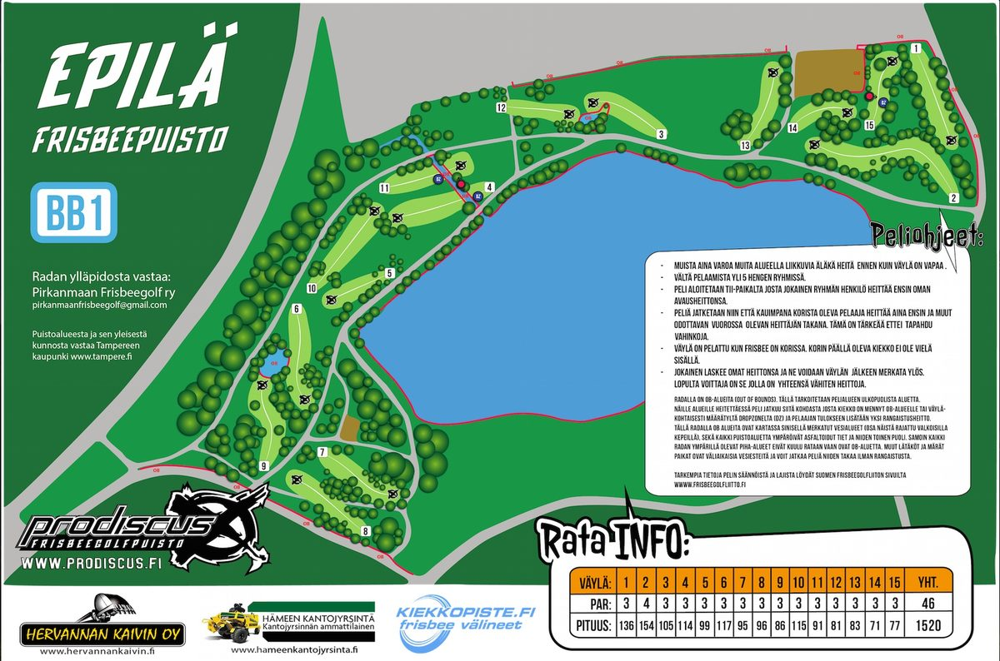

Epilän frisbeepuisto
Epilä on yksi Tampereen vanhimmista radoista. Se on puistorata, jossa pelataan enimmäkseen nurmikolla, ja radan reunoilla on vähän metsää. Maasto on kumpuilevaa, ja lampi sekä oja tuovat väylille OB-alueita. Radalla on pelattu myös EM-kisat vuonna 2005.
- Väyliä: 15
- Par: 46
- Perustettu: 1998
- Osoite: Rankasillankatu, Tampere
- Pelaaminen on ilmaista
